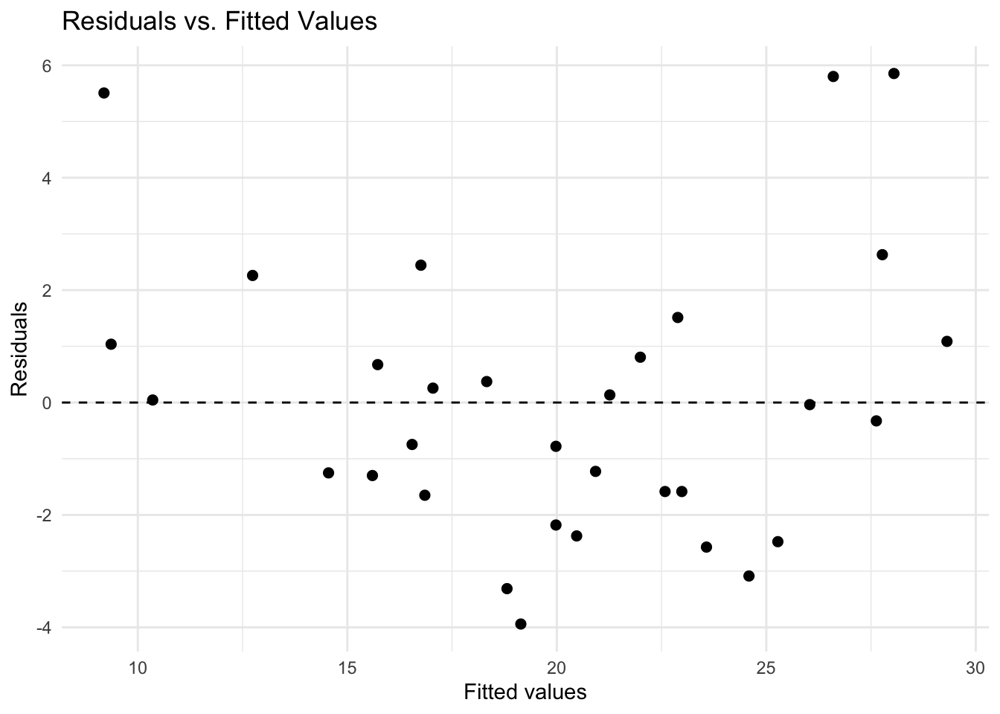
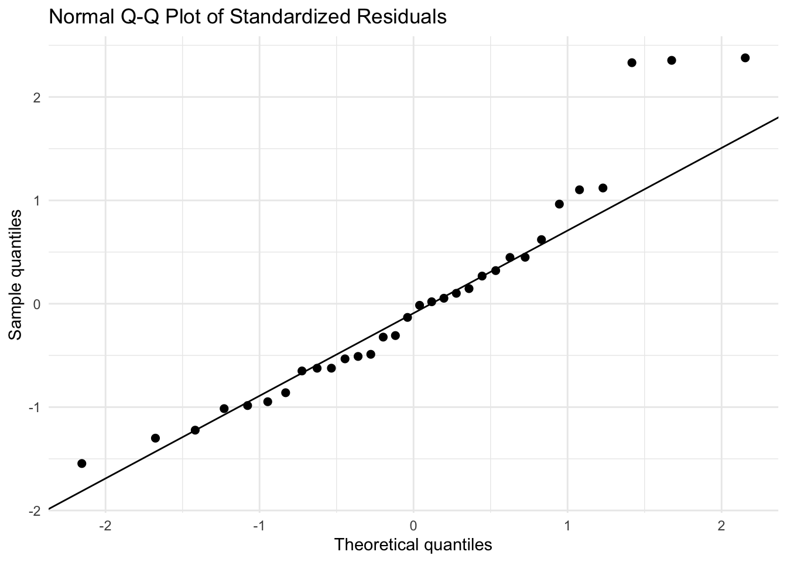
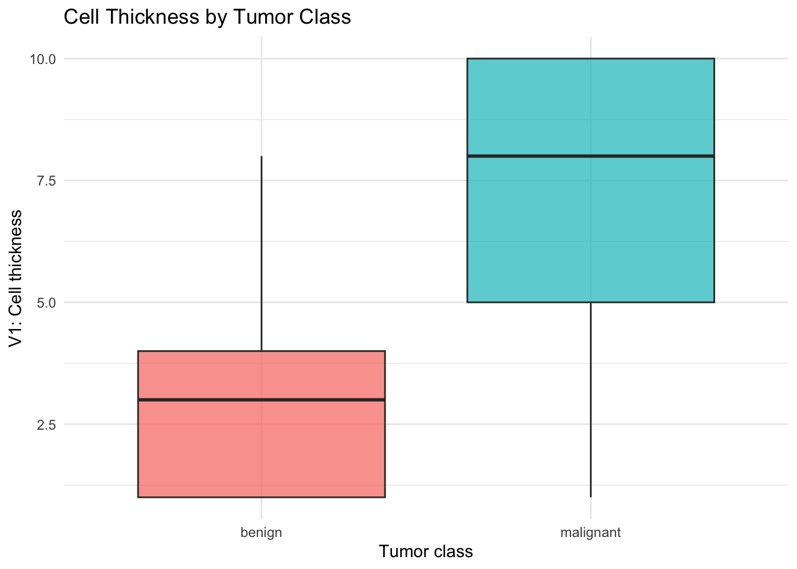
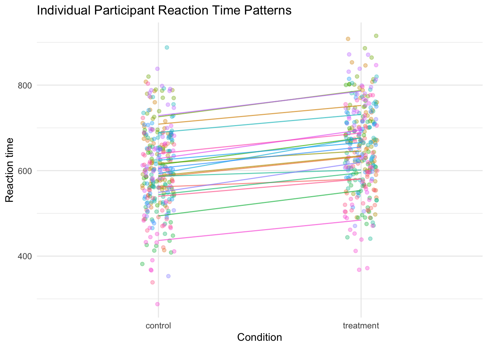
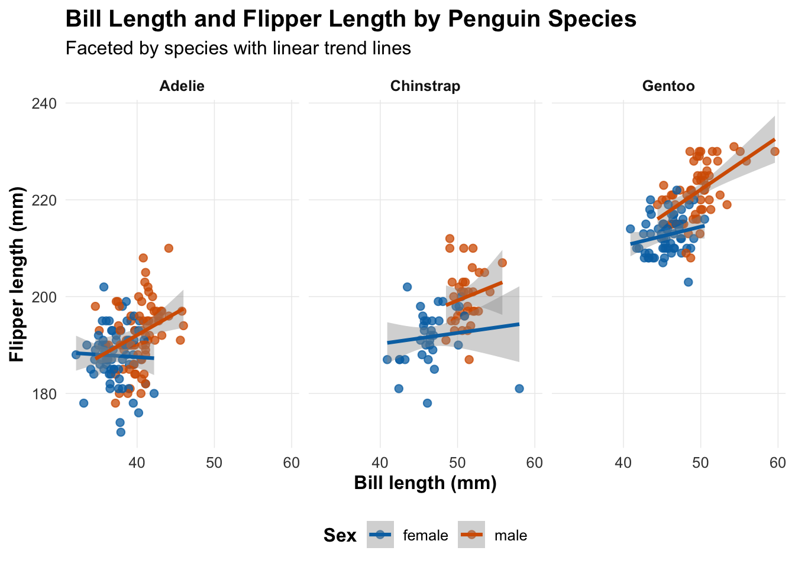
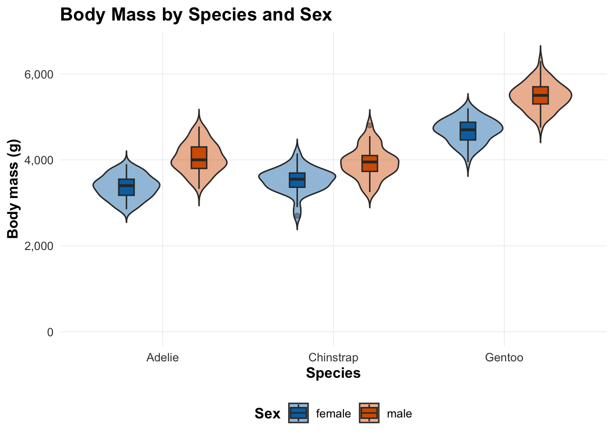
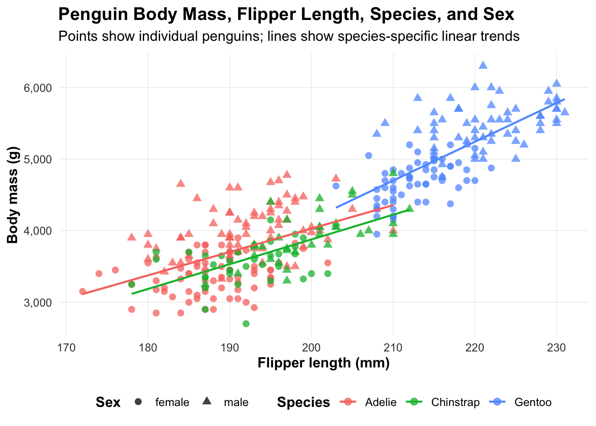
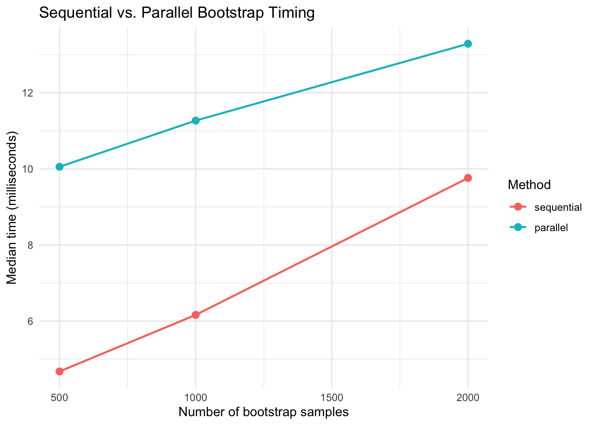

knitr::opts_chunk$set(
echo = TRUE,
warning = FALSE,
message = FALSE
)
library(MASS)
library(car)
library(lme4)
library(ggplot2)
library(dplyr)
library(palmerpenguins)
library(shiny)
library(parallel)
library(microbenchmark)PHB 228 Homework 2: Statistical Models, Visualization, and Tools
1 Part 1: Linear and Generalized Linear Models
1.1 1.1 Linear Models and Diagnostics
1.1.1 (a)
data(mtcars)
lm1 <- lm(mpg ~ wt + hp, data = mtcars)
summary(lm1)
Call:
lm(formula = mpg ~ wt + hp, data = mtcars)
Residuals:
Min 1Q Median 3Q Max
-3.941 -1.600 -0.182 1.050 5.854
Coefficients:
Estimate Std. Error t value Pr(>|t|)
(Intercept) 37.22727 1.59879 23.285 < 2e-16 ***
wt -3.87783 0.63273 -6.129 1.12e-06 ***
hp -0.03177 0.00903 -3.519 0.00145 **
---
Signif. codes: 0 '***' 0.001 '**' 0.01 '*' 0.05 '.' 0.1 ' ' 1
Residual standard error: 2.593 on 29 degrees of freedom
Multiple R-squared: 0.8268, Adjusted R-squared: 0.8148
F-statistic: 69.21 on 2 and 29 DF, p-value: 9.109e-12The fitted model predicts miles per gallon (mpg) using vehicle weight (wt) and horsepower (hp). The intercept represents the predicted mpg when both wt and hp are zero, which is not meaningful in a practical sense here because cars with zero weight and zero horsepower do not exist. The coefficient for wt estimates the expected change in mpg for a one-unit increase in weight, holding horsepower constant. The coefficient for hp estimates the expected change in mpg for a one-unit increase in horsepower, holding weight constant. In this model, both predictors are expected to have negative coefficients, meaning heavier cars and cars with higher horsepower tend to have lower fuel efficiency.
1.1.2 (b)
lm1_aug <- data.frame(
fitted = fitted(lm1),
residuals = resid(lm1),
std_resid = rstandard(lm1)
)
ggplot(lm1_aug, aes(x = fitted, y = residuals)) +
geom_point(size = 2) +
geom_hline(yintercept = 0, linetype = "dashed") +
labs(
title = "Residuals vs. Fitted Values",
x = "Fitted values",
y = "Residuals"
) +
theme_minimal()
The residuals vs. fitted values plot is used to check whether the linearity and constant variance assumptions are reasonable. A good diagnostic plot should show residuals scattered randomly around zero without a strong curved pattern or clear funnel shape. If there is curvature, the linear model may be missing a nonlinear relationship. If the spread of residuals changes with fitted values, the constant variance assumption may be questionable.
ggplot(lm1_aug, aes(sample = std_resid)) +
stat_qq(size = 2) +
stat_qq_line() +
labs(
title = "Normal Q-Q Plot of Standardized Residuals",
x = "Theoretical quantiles",
y = "Sample quantiles"
) +
theme_minimal()
The normal Q-Q plot is used to assess whether the residuals are approximately normally distributed. If the points fall close to the reference line, the normality assumption is reasonably supported. Strong departures from the line, especially in the tails, would suggest non-normal residuals or possible outliers.
1.1.3 (c)
vif(lm1) wt hp
1.766625 1.766625 Variance inflation factors (VIFs) measure how strongly each predictor is linearly related to the other predictors in the model. A VIF near 1 suggests little multicollinearity. Common rules of thumb are that VIF values above 5 or 10 may indicate concerning multicollinearity. For this model, if the VIFs are not large, then wt and hp can both be included without serious concern about unstable coefficient estimates due to collinearity.
1.1.4 (d)
lm2 <- lm(mpg ~ wt * hp, data = mtcars)
summary(lm2)
Call:
lm(formula = mpg ~ wt * hp, data = mtcars)
Residuals:
Min 1Q Median 3Q Max
-3.0632 -1.6491 -0.7362 1.4211 4.5513
Coefficients:
Estimate Std. Error t value Pr(>|t|)
(Intercept) 49.80842 3.60516 13.816 5.01e-14 ***
wt -8.21662 1.26971 -6.471 5.20e-07 ***
hp -0.12010 0.02470 -4.863 4.04e-05 ***
wt:hp 0.02785 0.00742 3.753 0.000811 ***
---
Signif. codes: 0 '***' 0.001 '**' 0.01 '*' 0.05 '.' 0.1 ' ' 1
Residual standard error: 2.153 on 28 degrees of freedom
Multiple R-squared: 0.8848, Adjusted R-squared: 0.8724
F-statistic: 71.66 on 3 and 28 DF, p-value: 2.981e-13anova(lm1, lm2)Analysis of Variance Table
Model 1: mpg ~ wt + hp
Model 2: mpg ~ wt * hp
Res.Df RSS Df Sum of Sq F Pr(>F)
1 29 195.05
2 28 129.76 1 65.286 14.088 0.0008108 ***
---
Signif. codes: 0 '***' 0.001 '**' 0.01 '*' 0.05 '.' 0.1 ' ' 1The interaction model allows the association between wt and mpg to depend on horsepower, and it also allows the association between hp and mpg to depend on weight. The ANOVA comparison shows that adding the interaction term significantly improves the model fit compared with the additive model, with p-value about 0.0008. Therefore, I prefer the interaction model because it captures a statistically significant interaction between weight and horsepower and has better model fit.
1.2 1.2 Logistic Regression
data(biopsy, package = "MASS")
biopsy <- na.omit(biopsy)
biopsy$class <- factor(biopsy$class, levels = c("benign", "malignant"))
str(biopsy)'data.frame': 683 obs. of 11 variables:
$ ID : chr "1000025" "1002945" "1015425" "1016277" ...
$ V1 : int 5 5 3 6 4 8 1 2 2 4 ...
$ V2 : int 1 4 1 8 1 10 1 1 1 2 ...
$ V3 : int 1 4 1 8 1 10 1 2 1 1 ...
$ V4 : int 1 5 1 1 3 8 1 1 1 1 ...
$ V5 : int 2 7 2 3 2 7 2 2 2 2 ...
$ V6 : int 1 10 2 4 1 10 10 1 1 1 ...
$ V7 : int 3 3 3 3 3 9 3 3 1 2 ...
$ V8 : int 1 2 1 7 1 7 1 1 1 1 ...
$ V9 : int 1 1 1 1 1 1 1 1 5 1 ...
$ class: Factor w/ 2 levels "benign","malignant": 1 1 1 1 1 2 1 1 1 1 ...
- attr(*, "na.action")= 'omit' Named int [1:16] 24 41 140 146 159 165 236 250 276 293 ...
..- attr(*, "names")= chr [1:16] "24" "41" "140" "146" ...table(biopsy$class)
benign malignant
444 239 1.2.1 (a)
ggplot(biopsy, aes(x = class, y = V1, fill = class)) +
geom_boxplot(alpha = 0.7) +
labs(
title = "Cell Thickness by Tumor Class",
x = "Tumor class",
y = "V1: Cell thickness"
) +
theme_minimal() +
theme(legend.position = "none")
The boxplot compares the distribution of cell thickness between benign and malignant tumors. If the malignant group has a higher median and generally larger values of V1, this suggests that malignant tumors tend to have greater cell thickness. The plot is useful because it shows both the center and spread of the variable by group.
1.2.2 (b)
logit_fit <- glm(
class ~ V1 + V2 + V3,
data = biopsy,
family = binomial
)
summary(logit_fit)
Call:
glm(formula = class ~ V1 + V2 + V3, family = binomial, data = biopsy)
Coefficients:
Estimate Std. Error z value Pr(>|z|)
(Intercept) -7.7210 0.6969 -11.079 < 2e-16 ***
V1 0.5918 0.1030 5.746 9.14e-09 ***
V2 0.6390 0.1704 3.751 0.000176 ***
V3 0.7240 0.1661 4.358 1.31e-05 ***
---
Signif. codes: 0 '***' 0.001 '**' 0.01 '*' 0.05 '.' 0.1 ' ' 1
(Dispersion parameter for binomial family taken to be 1)
Null deviance: 884.35 on 682 degrees of freedom
Residual deviance: 176.50 on 679 degrees of freedom
AIC: 184.5
Number of Fisher Scoring iterations: 7odds_ratios <- exp(coef(logit_fit))
odds_ratios (Intercept) V1 V2 V3
0.0004433959 1.8073247714 1.8946201232 2.0627331079 This logistic regression models the log-odds of a tumor being malignant as a function of V1, V2, and V3. Positive coefficients indicate that higher values of the predictor are associated with higher odds of malignancy, holding the other predictors constant. The odds ratios are obtained by exponentiating the coefficients. An odds ratio greater than 1 means that a one-unit increase in that predictor is associated with higher odds of malignancy, holding the other variables constant.
1.2.3 (c)
biopsy$pred_prob <- predict(logit_fit, type = "response")
biopsy$pred_class <- factor(
ifelse(biopsy$pred_prob >= 0.5, "malignant", "benign"),
levels = c("benign", "malignant")
)
conf_mat <- table(
Predicted = biopsy$pred_class,
Actual = biopsy$class
)
conf_mat Actual
Predicted benign malignant
benign 430 20
malignant 14 219TP <- conf_mat["malignant", "malignant"]
TN <- conf_mat["benign", "benign"]
FP <- conf_mat["malignant", "benign"]
FN <- conf_mat["benign", "malignant"]
accuracy <- (TP + TN) / sum(conf_mat)
sensitivity <- TP / (TP + FN)
specificity <- TN / (TN + FP)
c(
accuracy = accuracy,
sensitivity = sensitivity,
specificity = specificity
) accuracy sensitivity specificity
0.9502196 0.9163180 0.9684685 Accuracy is the overall proportion of observations correctly classified. Sensitivity is the proportion of true malignant tumors that are correctly classified as malignant. Specificity is the proportion of true benign tumors that are correctly classified as benign. These metrics describe different aspects of classification performance, so it is useful to report all three rather than only accuracy.
1.2.4 (d)
new_obs <- data.frame(V1 = 5, V2 = 4, V3 = 4)
new_prob <- predict(logit_fit, newdata = new_obs, type = "response")
new_prob 1
0.6660541 For a new observation with V1 = 5, V2 = 4, and V3 = 4, the model estimates the probability of malignancy as the value shown above. If this probability is above 0.5, the observation would be classified as malignant using the threshold from part (c). If it is below 0.5, it would be classified as benign. The interpretation should be made as a model-based prediction, not as a guaranteed diagnosis.
2 Part 2: Mixed-Effects Models
2.1 (a)
library(lme4)
set.seed(123)
n_participants <- 20
n_items <- 15
n_conditions <- 2
participants <- factor(rep(1:n_participants, each = n_items * n_conditions))
items <- factor(rep(rep(1:n_items, each = n_conditions), times = n_participants))
condition <- factor(
rep(c("control", "treatment"), times = n_participants * n_items),
levels = c("control", "treatment")
)
participant_intercepts <- rnorm(n_participants, mean = 0, sd = 80)
item_intercepts <- rnorm(n_items, mean = 0, sd = 40)
rt <- 600 +
40 * (condition == "treatment") +
participant_intercepts[participants] +
item_intercepts[items] +
rnorm(length(condition), mean = 0, sd = 60)
rt_data <- data.frame(
rt = rt,
participant = participants,
item = items,
condition = condition
)
head(rt_data) rt participant item condition
1 553.7674 1 1 control
2 585.6841 1 1 treatment
3 542.7282 1 2 control
4 568.0852 1 2 treatment
5 491.2935 1 3 control
6 512.4394 1 3 treatmentsummary(rt_data) rt participant item condition
Min. :287.7 1 : 30 1 : 40 control :300
1st Qu.:560.1 2 : 30 2 : 40 treatment:300
Median :624.9 3 : 30 3 : 40
Mean :627.6 4 : 30 4 : 40
3rd Qu.:696.9 5 : 30 5 : 40
Max. :915.3 6 : 30 6 : 40
(Other):420 (Other):360 This simulated dataset has 20 participants, 15 items, and 2 conditions. Each participant completed each item in both the control and treatment conditions, so the data have a crossed repeated-measures structure. Reaction time is simulated with a treatment effect, participant-level variation, item-level variation, and residual error.
2.2 (b)
m_lm <- lm(rt ~ condition, data = rt_data)
m_participant <- lmer(
rt ~ condition + (1 | participant),
data = rt_data,
REML = FALSE
)
m_participant_item <- lmer(
rt ~ condition + (1 | participant) + (1 | item),
data = rt_data,
REML = FALSE
)
summary(m_lm)
Call:
lm(formula = rt ~ condition, data = rt_data)
Residuals:
Min 1Q Median 3Q Max
-315.288 -65.025 -1.025 70.331 285.066
Coefficients:
Estimate Std. Error t value Pr(>|t|)
(Intercept) 602.953 5.814 103.703 < 2e-16 ***
conditiontreatment 49.270 8.223 5.992 3.58e-09 ***
---
Signif. codes: 0 '***' 0.001 '**' 0.01 '*' 0.05 '.' 0.1 ' ' 1
Residual standard error: 100.7 on 598 degrees of freedom
Multiple R-squared: 0.05664, Adjusted R-squared: 0.05506
F-statistic: 35.9 on 1 and 598 DF, p-value: 3.583e-09summary(m_participant)Linear mixed model fit by maximum likelihood ['lmerMod']
Formula: rt ~ condition + (1 | participant)
Data: rt_data
AIC BIC logLik -2*log(L) df.resid
6878.8 6896.4 -3435.4 6870.8 596
Scaled residuals:
Min 1Q Median 3Q Max
-2.96902 -0.67232 0.01689 0.65331 2.92628
Random effects:
Groups Name Variance Std.Dev.
participant (Intercept) 5207 72.16
Residual 4900 70.00
Number of obs: 600, groups: participant, 20
Fixed effects:
Estimate Std. Error t value
(Intercept) 602.953 16.635 36.25
conditiontreatment 49.270 5.716 8.62
Correlation of Fixed Effects:
(Intr)
cndtntrtmnt -0.172summary(m_participant_item)Linear mixed model fit by maximum likelihood ['lmerMod']
Formula: rt ~ condition + (1 | participant) + (1 | item)
Data: rt_data
AIC BIC logLik -2*log(L) df.resid
6726.3 6748.2 -3358.1 6716.3 595
Scaled residuals:
Min 1Q Median 3Q Max
-3.0047 -0.6190 -0.0559 0.6432 3.2492
Random effects:
Groups Name Variance Std.Dev.
participant (Intercept) 5324 72.97
item (Intercept) 1420 37.68
Residual 3501 59.17
Number of obs: 600, groups: participant, 20; item, 15
Fixed effects:
Estimate Std. Error t value
(Intercept) 602.953 19.301 31.24
conditiontreatment 49.270 4.831 10.20
Correlation of Fixed Effects:
(Intr)
cndtntrtmnt -0.125AIC(m_lm, m_participant, m_participant_item) df AIC
m_lm 3 7241.367
m_participant 4 6878.828
m_participant_item 5 6726.251BIC(m_lm, m_participant, m_participant_item) df BIC
m_lm 3 7254.558
m_participant 4 6896.415
m_participant_item 5 6748.236anova(m_participant, m_participant_item)Data: rt_data
Models:
m_participant: rt ~ condition + (1 | participant)
m_participant_item: rt ~ condition + (1 | participant) + (1 | item)
npar AIC BIC logLik -2*log(L) Chisq Df Pr(>Chisq)
m_participant 4 6878.8 6896.4 -3435.4 6870.8
m_participant_item 5 6726.3 6748.2 -3358.1 6716.3 154.58 1 < 2.2e-16
m_participant
m_participant_item ***
---
Signif. codes: 0 '***' 0.001 '**' 0.01 '*' 0.05 '.' 0.1 ' ' 1The fixed-effects-only model ignores the fact that observations from the same participant or same item may be correlated. The random-intercepts participant model accounts for participant-level differences in baseline reaction time. The model with random intercepts for both participants and items accounts for both participant-level and item-level variation. I would prefer the model with random intercepts for both participants and items if it has better AIC/BIC and the likelihood ratio test suggests improved fit, because it better reflects the structure of the experiment.
2.3 (c)
best_model <- m_participant_item
fixef(best_model) (Intercept) conditiontreatment
602.95268 49.26954 vc_best <- as.data.frame(VarCorr(best_model))
vc_best grp var1 var2 vcov sdcor
1 participant (Intercept) <NA> 5324.305 72.96784
2 item (Intercept) <NA> 1419.622 37.67788
3 Residual <NA> <NA> 3501.352 59.17223var_participant <- vc_best$vcov[vc_best$grp == "participant"]
var_item <- vc_best$vcov[vc_best$grp == "item"]
var_resid <- attr(VarCorr(best_model), "sc")^2
icc_participant <- var_participant / (var_participant + var_item + var_resid)
icc_participant[1] 0.5196837The fixed intercept represents the estimated mean reaction time in the control condition for an average participant and average item. The fixed effect for conditiontreatment estimates the mean difference in reaction time between the treatment and control conditions, after accounting for participant and item differences. The participant ICC estimates the proportion of total variance attributable to differences between participants. A larger ICC means that observations from the same participant are more similar to each other because participant-to-participant differences explain a larger share of total variability.
2.4 (d)
m_random_slope <- lmer(
rt ~ condition + (1 + condition | participant) + (1 | item),
data = rt_data,
REML = FALSE,
control = lmerControl(optimizer = "bobyqa")
)
summary(m_random_slope)Linear mixed model fit by maximum likelihood ['lmerMod']
Formula: rt ~ condition + (1 + condition | participant) + (1 | item)
Data: rt_data
Control: lmerControl(optimizer = "bobyqa")
AIC BIC logLik -2*log(L) df.resid
6729.9 6760.7 -3358.0 6715.9 593
Scaled residuals:
Min 1Q Median 3Q Max
-3.0221 -0.6257 -0.0453 0.6414 3.2544
Random effects:
Groups Name Variance Std.Dev. Corr
participant (Intercept) 5129.551 71.621
conditiontreatment 7.241 2.691 1.00
item (Intercept) 1419.352 37.674
Residual 3499.415 59.156
Number of obs: 600, groups: participant, 20; item, 15
Fixed effects:
Estimate Std. Error t value
(Intercept) 602.953 19.046 31.66
conditiontreatment 49.270 4.867 10.12
Correlation of Fixed Effects:
(Intr)
cndtntrtmnt -0.022
optimizer (bobyqa) convergence code: 0 (OK)
boundary (singular) fit: see help('isSingular')anova(m_participant_item, m_random_slope)Data: rt_data
Models:
m_participant_item: rt ~ condition + (1 | participant) + (1 | item)
m_random_slope: rt ~ condition + (1 + condition | participant) + (1 | item)
npar AIC BIC logLik -2*log(L) Chisq Df Pr(>Chisq)
m_participant_item 5 6726.3 6748.2 -3358.1 6716.3
m_random_slope 7 6729.9 6760.7 -3358.0 6715.9 0.3067 2 0.8578The random-slope model allows the treatment effect to vary across participants. However, the likelihood ratio test comparing the random-slope model to the random-intercepts model gives a large p-value, so there is not strong evidence that the random slope improves model fit. The model output also indicates a singular fit, suggesting that the random-slope structure may be too complex for this simulated dataset. Therefore, I prefer the simpler random-intercepts model with random intercepts for both participants and items.
2.5 (e)
ggplot(rt_data, aes(x = condition, y = rt, group = participant, color = participant)) +
geom_jitter(width = 0.08, alpha = 0.35, show.legend = FALSE) +
geom_line(
stat = "summary",
fun = mean,
alpha = 0.7,
show.legend = FALSE
) +
labs(
title = "Individual Participant Reaction Time Patterns",
x = "Condition",
y = "Reaction time"
) +
theme_minimal()
The plot shows each participant’s average reaction time pattern across the control and treatment conditions. It is useful because it shows whether the treatment effect appears consistent across participants or whether some participants show stronger or weaker changes.
3 Part 3: Advanced Data Visualization
penguins_clean <- penguins |>
filter(!is.na(bill_length_mm),
!is.na(flipper_length_mm),
!is.na(body_mass_g),
!is.na(sex),
!is.na(species))3.1 3.1 Custom Theme
theme_penguin <- function(base_size = 12) {
theme_minimal(base_size = base_size) +
theme(
plot.title = element_text(face = "bold", size = rel(1.25)),
plot.subtitle = element_text(size = rel(1.0), margin = margin(b = 8)),
axis.title = element_text(face = "bold"),
axis.text = element_text(color = "gray25"),
panel.grid.minor = element_blank(),
panel.grid.major = element_line(linewidth = 0.25),
strip.text = element_text(face = "bold"),
legend.position = "bottom",
legend.title = element_text(face = "bold")
)
}The custom theme is based on theme_minimal() and modifies more than five elements, including the plot title, subtitle, axis titles, axis text, minor grid lines, facet labels, and legend placement. The goal is to create a clean scientific style that can be reused across plots.
3.2 3.2 Faceted plot
sex_palette <- c("female" = "#0072B2", "male" = "#D55E00")
ggplot(
penguins_clean,
aes(x = bill_length_mm, y = flipper_length_mm, color = sex)
) +
geom_point(alpha = 0.75, size = 2) +
geom_smooth(method = "lm", se = TRUE) +
facet_wrap(~ species) +
scale_color_manual(values = sex_palette) +
labs(
title = "Bill Length and Flipper Length by Penguin Species",
subtitle = "Faceted by species with linear trend lines",
x = "Bill length (mm)",
y = "Flipper length (mm)",
color = "Sex"
) +
theme_penguin()
This plot shows the relationship between bill length and flipper length separately for each penguin species. Faceting by species helps avoid hiding group-specific patterns. The regression lines summarize the linear association within each species, while the color coding shows sex differences.
3.3 3.3 Distribution comparison
ggplot(penguins_clean, aes(x = species, y = body_mass_g, fill = sex)) +
geom_violin(alpha = 0.45, position = position_dodge(width = 0.85), trim = FALSE) +
geom_boxplot(
width = 0.18,
position = position_dodge(width = 0.85),
outlier.alpha = 0.4
) +
scale_fill_manual(values = sex_palette) +
scale_y_continuous(
limits = c(0, NA),
labels = scales::comma
) +
labs(
title = "Body Mass by Species and Sex",
x = "Species",
y = "Body mass (g)",
fill = "Sex"
) +
theme_penguin()
This plot compares body mass distributions by species and sex. The violin plot shows the shape of the distribution, while the boxplot summarizes the median and interquartile range. Starting the y-axis at zero makes the body mass scale easier to interpret in physical units.
3.4 3.4 Complex Multi-Variable Visualization
ggplot(
penguins_clean,
aes(
x = flipper_length_mm,
y = body_mass_g,
color = species,
shape = sex
)
) +
geom_point(alpha = 0.75, size = 2.4) +
geom_smooth(aes(group = species), method = "lm", se = FALSE, linewidth = 0.8) +
scale_y_continuous(labels = scales::comma) +
labs(
title = "Penguin Body Mass, Flipper Length, Species, and Sex",
subtitle = "Points show individual penguins; lines show species-specific linear trends",
x = "Flipper length (mm)",
y = "Body mass (g)",
color = "Species",
shape = "Sex"
) +
theme_penguin()
This visualization uses body mass, flipper length, species, and sex in one plot. Overall, penguins with longer flippers tend to have greater body mass. Gentoo penguins appear larger and have longer flippers than Adelie and Chinstrap penguins. The point shapes also suggest that sex is related to body mass, with males often appearing heavier than females within species. The regression lines help show that the positive relationship between flipper length and body mass is present within species, not only across species.
4 Part 4: Interactive Visualization with Shiny
The following Shiny app explores the mtcars dataset. The code is included in the Quarto file but is not evaluated during rendering so that the homework document can render normally.
4.1 (a)
The UI includes a selectInput() dropdown for choosing a predictor variable from wt, hp, disp, and drat. It also includes a plotOutput() for the scatter plot and a verbatimTextOutput() for the model summary.
4.2 (b)
The server uses a reactive() expression to fit a linear model predicting mpg from the user-selected predictor. It uses renderPlot() to display the scatter plot with a regression line and renderPrint() to display the model summary.
4.3 (c)
As an enhancement, I added a sliderInput() to filter cars by number of cylinders and a checkboxInput() to toggle the regression line. The cylinder filter lets users explore whether the relationship changes across car types, while the checkbox makes it easier to compare the raw scatter plot with the fitted trend.
library(shiny)
library(ggplot2)
library(dplyr)
ui <- fluidPage(
titlePanel("Interactive mtcars Linear Model Explorer"),
sidebarLayout(
sidebarPanel(
# Part (a): dropdown for selecting predictor variable
selectInput(
inputId = "predictor",
label = "Choose predictor variable:",
choices = c("wt", "hp", "disp", "drat"),
selected = "wt"
),
# Part (c): enhancement using a cylinder filter
sliderInput(
inputId = "cyl_filter",
label = "Include cars with number of cylinders:",
min = min(mtcars$cyl),
max = max(mtcars$cyl),
value = c(min(mtcars$cyl), max(mtcars$cyl)),
step = 2
),
# Part (c): enhancement using a regression-line toggle
checkboxInput(
inputId = "show_line",
label = "Show regression line",
value = TRUE
)
),
mainPanel(
# Part (a): output for scatter plot
plotOutput("scatter_plot"),
# Part (a): output for model summary
verbatimTextOutput("model_summary")
)
)
)
server <- function(input, output) {
filtered_data <- reactive({
mtcars |>
filter(cyl >= input$cyl_filter[1],
cyl <= input$cyl_filter[2])
})
# Part (b): reactive model using the selected predictor
model_fit <- reactive({
formula_text <- paste("mpg ~", input$predictor)
lm(as.formula(formula_text), data = filtered_data())
})
# Part (b): render scatter plot with optional regression line
output$scatter_plot <- renderPlot({
p <- ggplot(
filtered_data(),
aes(x = .data[[input$predictor]], y = mpg)
) +
geom_point(size = 2.5, alpha = 0.8) +
labs(
title = paste("MPG vs.", input$predictor),
x = input$predictor,
y = "Miles per gallon"
) +
theme_minimal()
if (input$show_line) {
p <- p + geom_smooth(method = "lm", se = TRUE)
}
p
})
# Part (b): render model summary
output$model_summary <- renderPrint({
summary(model_fit())
})
}
shinyApp(ui = ui, server = server)5 Part 5: Parallel Computing
5.1 5.1 System Setup and Benchmarking
5.1.1 (a)
logical_cores <- detectCores(logical = TRUE)
physical_cores <- detectCores(logical = FALSE)
logical_cores[1] 8physical_cores[1] 8safe_cores <- max(1, logical_cores - 1)
safe_cores[1] 7The number of logical and physical cores depends on the computer used to render this assignment. I define safe_cores as one fewer than the number of logical cores, with a minimum of one core. This is a common practical choice because it allows parallel computation while leaving one core available for the operating system and other tasks.
5.1.2 (b)
slow_mean <- function(x) {
Sys.sleep(0.01)
mean(x)
}
set.seed(123)
random_vectors <- replicate(
100,
rnorm(1000),
simplify = FALSE
)
sequential_run <- function() {
lapply(random_vectors, slow_mean)
}
parallel_run <- function() {
if (.Platform$OS.type == "windows") {
cl <- makeCluster(safe_cores)
on.exit(stopCluster(cl))
parLapply(cl, random_vectors, slow_mean)
} else {
mclapply(random_vectors, slow_mean, mc.cores = safe_cores)
}
}
bench_results <- microbenchmark(
sequential = sequential_run(),
parallel = parallel_run(),
times = 5
)
bench_resultsUnit: milliseconds
expr min lq mean median uq max neval
sequential 1203.5863 1213.6549 1214.7112 1215.2457 1217.9647 1223.1044 5
parallel 173.6386 176.6556 179.4384 178.9313 183.9355 184.0309 5summary(bench_results)[, c("expr", "median")] expr median
1 sequential 1215.2457
2 parallel 178.9313The benchmark compares a sequential lapply() approach with a parallel approach. Because each call to slow_mean() includes a small artificial delay, the task is a good candidate for parallelization. If the parallel median time is smaller than the sequential median time, this suggests that distributing independent calculations across cores improves runtime.
5.2 5.2 Parallel Bootstrap
5.2.1 (a)
bootstrap_ci_sequential <- function(data, n_bootstrap = 1000, confidence = 0.95) {
boot_means <- numeric(n_bootstrap)
n <- length(data)
for (i in seq_len(n_bootstrap)) {
boot_sample <- sample(data, size = n, replace = TRUE)
boot_means[i] <- mean(boot_sample)
}
alpha <- 1 - confidence
ci <- quantile(
boot_means,
probs = c(alpha / 2, 1 - alpha / 2),
names = FALSE
)
c(lower = ci[1], upper = ci[2])
}
bootstrap_ci_sequential(mtcars$mpg, n_bootstrap = 1000) lower upper
18.04672 22.14398 5.2.2 (b)
bootstrap_ci_parallel <- function(data, n_bootstrap = 1000, confidence = 0.95) {
n <- length(data)
one_boot <- function(i) {
mean(sample(data, size = n, replace = TRUE))
}
if (.Platform$OS.type == "windows") {
cl <- makeCluster(safe_cores)
on.exit(stopCluster(cl))
clusterExport(cl, varlist = c("data", "n"), envir = environment())
boot_means <- unlist(parLapply(cl, seq_len(n_bootstrap), one_boot))
} else {
boot_means <- unlist(
mclapply(seq_len(n_bootstrap), one_boot, mc.cores = safe_cores)
)
}
alpha <- 1 - confidence
ci <- quantile(
boot_means,
probs = c(alpha / 2, 1 - alpha / 2),
names = FALSE
)
c(lower = ci[1], upper = ci[2])
}
bootstrap_ci_parallel(mtcars$mpg, n_bootstrap = 1000) lower upper
18.00898 22.12813 5.2.3 (c)
bootstrap_sizes <- c(500, 1000, 2000)
timing_results <- lapply(bootstrap_sizes, function(B) {
timing <- microbenchmark(
sequential = bootstrap_ci_sequential(mtcars$mpg, n_bootstrap = B),
parallel = bootstrap_ci_parallel(mtcars$mpg, n_bootstrap = B),
times = 3
)
timing_summary <- summary(timing, unit = "ms")
data.frame(
n_bootstrap = B,
method = timing_summary$expr,
median_time_ms = timing_summary$median
)
})
timing_results <- bind_rows(timing_results)
timing_results n_bootstrap method median_time_ms
1 500 sequential 4.678387
2 500 parallel 10.055455
3 1000 sequential 6.163776
4 1000 parallel 11.268768
5 2000 sequential 9.761403
6 2000 parallel 13.287362ggplot(timing_results, aes(x = n_bootstrap, y = median_time_ms, color = method)) +
geom_point(size = 2.5) +
geom_line(linewidth = 0.8) +
labs(
title = "Sequential vs. Parallel Bootstrap Timing",
x = "Number of bootstrap samples",
y = "Median time (milliseconds)",
color = "Method"
) +
theme_minimal()
The timing comparison shows how runtime changes as the number of bootstrap samples increases. In this example, the parallel version may not always be faster because mtcars$mpg is a small dataset and the bootstrap mean calculation is relatively cheap. Parallel computing has overhead from creating and managing workers, so it is most useful when each task is computationally expensive or when the number of repetitions is much larger. As the bootstrap size increases, the parallel approach may become more useful, but for small problems the sequential method can be competitive or faster.
6 Resources Used
I used the PHB 228 lecture materials, the homework assignment instructions, and R documentation for the functions used in this assignment. I also used chatgpt to help check R syntax, and draft concise explanations. The prompt used was: “Check if there is anything wrong with my Quarto structure and my R syntax. And see if my explanation is clear and can be understood.”